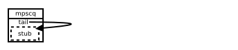
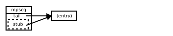
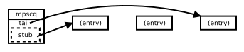
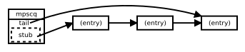
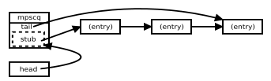
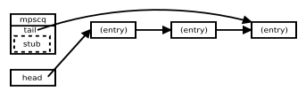
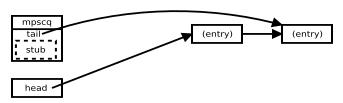

Lockless MPSC FIFO queues for io_uring
The old way's shortcomings
Task queues in pre-7.2 io_uring are based on the kernel's lockless singly linked list (llist) API. At the core of this type is a simple structure:
struct llist_node {
struct llist_node *next;
};
This structure, when embedded within another structure containing the actual data of interest, contains the links that bind those outer structures into a list.
There are a few reasons why this list type, despite being designed for performance, is not ideal for io_uring. Since an llist is a singly linked list, it can only realistically be accessed from the head. For a list where producers add items and consumers remove them, an llist is essentially a stack. Work items in io_uring need to be processed in the order they were received, for basic fairness purposes if nothing else, so a pass must be made over the task queue to reverse its order before each processing run. To make things worse, io_uring might choose not to process the whole list if it is too long, but the remaining items, having been reversed in order, cannot simply be put back onto the task list. So a separate list for reversed-but-not-processed items must be maintained. Finally, adding items to an llist involves accessing a single head pointer; that can be done without taking locks, but it does require a retry loop. For heavily contended lists, those retries (and associated cache-line bouncing) can hurt.
Solving these problems requires a data structure that is better suited to the needs of the io_uring subsystem. It must handle multiple producers putting work items on the lists, without locking and with a minimum amount of contention. There is a single consumer for each list; that consumer should avoid cache contention with the producers to the greatest extent possible. And, clearly, the need to reorder lists before processing should not exist.
Lockless MPSC queues
The solution is the lockless MPSC queue, posted by Jens Axboe and using an algorithm credited to Dmitry Vyukov. This queue still uses struct llist_node to tie the entries of the list together, but the head of the list looks like this:
struct mpscq {
struct llist_node *tail;
struct llist_node stub;
};
The term "head" is actually a bit misleading, since there is no pointer to the head of the list here; we'll get to that later. This view of the list is intended for the use of the producers, who need to add items to the tail of the list. The stub entry is a sentinel that is only present on the list if it is the only entry there — if the list is empty, in other words. When the list is initialized, the tail pointer is set to point at the stub entry.

The stub entry's next pointer is set to NULL. The addition of a node to the tail of the list is done with a call to this short function:
static inline bool mpscq_push(struct mpscq *q, struct llist_node *node)
{
struct llist_node *prev;
node->next = NULL;
prev = xchg(&q->tail, node);
WRITE_ONCE(prev->next, node);
return prev == &q->stub;
}
The next pointer in the new entry is set to NULL, indicating that it is the end of the list. Then, the xchg() call atomically stores a pointer to the new entry in the list's tail pointer, returning the previous value of that pointer; in the case of an empty list, that will be a pointer to the stub entry. The next pointer of the previous end-of-list entry (which, again, might have been the stub) is then set to the new entry, completing the task of adding that entry to the list.

There is a subtlety to lockless algorithms that is worth noting here. Once the tail pointer has been aimed at the new list entry, that entry is visible to the rest of the world. Among other things, that visibility implies that the next pointer in the new entry must be properly set before changing tail. Normally, either the compiler or the CPU could feel entitled to reorder the assignments to next and tail, which could result in the new tail being visible before the new node is fully initialized. The xchg() operation, though, is defined as a full barrier, meaning that operations that happen prior (such as the assignment to next) must be visible to the rest of the system before the exchange can take place. In the absence of a barrier operation, it would have been necessary to manually insert a barrier between those two assignments.
If multiple CPUs attempt to add entries to the same list at the same time, the xchg() call will serialize them, ensuring that the tail pointer is updated in an orderly manner. If two CPUs perform their xchg() calls simultaneously, one will "win" and go first, followed by the other. That could result in a list that, briefly, looks like this:

Since each xchg() call returns the previous state of the tail pointer, each addition knows where the preceding entry in the list is. That allows it to set the next pointer accordingly. Once the two additions complete, the list will look like:

There is no locking required to keep the list in a coherent state, and no retry loops are needed, so addition operations are fast. Additions can be made while running within any kernel context as well.
The consumer's view
The consumer side is just a little bit more involved, starting with the fact that the consumer maintains a head-of-list pointer separately from the mpscq structure; it is a simple struct llist_node pointer holding the address of the first entry in the list. The purpose of this separation is to ensure that the head and tail pointers are placed in separate cache lines, avoiding cache contention between the producers and the consumer. To remove the first entry in the list, the consumer will pass that head pointer to:
static inline struct llist_node *mpscq_pop(struct mpscq *q,
struct llist_node **headp);
There are a few cases that this function has to be prepared for. When the list is first created, in an empty state (as shown above), the head-of-list pointer will contain the address of the stub entry. Since additions to the list do not change the head pointer, that situation will remain until the first item is removed from the list. Imagine that no items have yet been removed from the list shown above; with the separate head pointer, the picture looks like this:

Item removal for that case is handled this way:
struct llist_node *head = *headp, *next;
if (head == &q->stub) {
head = READ_ONCE(head->next);
if (!head)
return NULL;
q->stub.next = NULL;
*headp = head;
}
Remember that the addition of the first entry to the list set the next pointer in stub to that first entry; here the code checks that pointer. If it is NULL then the list is empty, so NULL is returned. Otherwise the head is advanced to the value of the stub's next field, which is subsequently set to NULL.

The stub has no further role in the management of the list until it is emptied again.
Now that it has been established that there is an entry on the list, the next check is to see if it is the last entry. In the negative case, when further entries exist, the head pointer can be advanced to the next of those entries, and a pointer to the head entry returned:
next = READ_ONCE(head->next);
if (next) {
*headp = next;
return head;
}
After an item is returned in this way, the situation is:

If the next pointer is NULL, though, then there are no more entries in the list, and the tail pointer must, once again, be set to the stub. There is a twist, though: there may be a producer adding a new entry to the list at the same time. So a compare-and-exchange operation is needed to attempt to reset the list to the empty state:
if (try_cmpxchg(&q->tail, &head, &q->stub)) {
*headp = &q->stub;
return head;
}
return NULL;
The try_cmpxchg() call compares the tail pointer to the head pointer (which, remember, points to the one entry in the list). If the two are equal, it atomically sets the tail to point to the stub, resetting the list to the empty state shown at the beginning; it then returns the last entry in the list.
If, however, the try_cmpxchg() call fails, then the consumer has raced with another producer, and that producer has changed the tail pointer behind the consumer's back. In this case, NULL is returned and the last entry is left on the list until the next time the consumer retries. The consumer can distinguish this case from the list-is-empty case by seeing whether the tail pointer is aimed at the stub entry:
static inline bool mpscq_empty(struct mpscq *q)
{
return READ_ONCE(q->tail) == &q->stub;
}
That describes the entire API. The code can be found in io_uring/mpscq.h; it is not, at this point, placed under lib/ and made available to the rest of the kernel. That could, of course, be changed if an interested user outside of io_uring were to emerge.
As of 7.2, this new queue type is used for a couple of different task lists within io_uring. The results, as described in this patch, are a significant increase in performance with reduced overhead — more work is done more quickly, while simultaneously reducing the amount of time spent executing in the kernel. The io_uring code is also simplified somewhat, since it no longer needs to reverse the lists or maintain a separate list of work items that were removed from the task list but not yet acted upon. All told, it would appear to be an optimization whose time has come.
(Postscript: this topic was at risk of being passed over, but it
received enough votes on the LWN public topics
page, which is available to subscribers at the Project Leader level and
above, that I decided to give it another look. My thanks go to the LWN
readers who thought this development was worthy of an article.)
| Index entries for this article | |
|---|---|
| Kernel | io_uring |
| Kernel | Lockless algorithms |
| Kernel | Releases/7.2 |
Posted Jul 15, 2026 17:52 UTC (Wed)
by dankamongmen (subscriber, #35141)
[Link]
nice writeup, also!
Posted Jul 15, 2026 18:19 UTC (Wed)
by comex (subscriber, #71521)
[Link] (4 responses)
Specifically, suppose a producer is suspended between these two operations:
> prev = xchg(&q->tail, node);
Then `q->tail` will be pointing to the producer's `node`, but the consumer has no way of reaching it as it hasn't been linked into any `next` pointers yet. If the consumer tries to pop, it will reach the `try_cmpxchg` but it will fail, so `mpscq_pop` should return NULL. However, `mpscq_empty` should still return false.
If a different producer then tries to add another node, it will be stored in the `next` pointer of the `node` from above. Once the first producer resumes, both nodes will be visible to the consumer as expected. But as long as the first producer remains suspended, neither node will be visible to the consumer. All further entries will pile up this way without being visible to the consumer.
In other words, a single producer being suspended can prevent the system from making progress even if another producer and the consumer are both running.
Spoiler: I just checked the original source code and sure enough, this is called out in the block comment at the top.
> In between, the tail end of the queue is not yet reachable from the head. mpscq_pop() detects this and returns NULL, while mpscq_empty() reports false. The consumer must not treat such a NULL as "queue empty" - it should retry later. The window is two instructions wide, but a producer can be preempted inside it, so the consumer must not spin on it while holding resources the producer might need to make progress.
Interesting. That's not going to be compatible with any kind of real-time requirement – the idea that the consumer should just "retry later" and hope the producer has woken up by then – but I guess those requirements don't generally apply to I/O?
Posted Jul 16, 2026 8:51 UTC (Thu)
by stefanha (subscriber, #55072)
[Link]
Posted Jul 16, 2026 17:33 UTC (Thu)
by iabervon (subscriber, #722)
[Link]
Posted Jul 25, 2026 21:08 UTC (Sat)
by Vorpal (guest, #136011)
[Link] (1 responses)
However, I believe at least Modbus has a variant that is sent over ethernet as well, but I have never worked with it, so I dont know if that is RT and if it involves special hardware to be able to do that.
Other forms of realtime IO tend to be GPIO, serial, and similar. There are also embedded buses like I2C and SPI as well. None of those is likely to use io-uring either. And it is common to put the really time critical parts on a microcontroller and leave Linux to the slower and more compute intensive parts (and have it talk over one of the previously mentioned buses or over serial to the microcontroller).
Posted Jul 27, 2026 9:10 UTC (Mon)
by farnz (subscriber, #17727)
[Link]
Posted Jul 17, 2026 3:13 UTC (Fri)
by marcH (subscriber, #57642)
[Link]
But I wish edge cases (e.g. empty list) and races were always presented _after_ the most common state and operations. I found myself skipping and rewinding a fair bit and often by too much or too little. In fact, that back and forth is still in progress :-)
outstanding!
Not truly lock-free?
<-- here
> WRITE_ONCE(prev->next, node);
Not truly lock-free?
Not truly lock-free?
Not truly lock-free?
There are real-time Ethernet networks, too; the underpinning standard is nowadays usually 802.1 TSN, but EtherCAT and other such protocols also made Ethernet work for real time (in some cases with special Ethernet-compatible hardware, in other cases just by managing contention).
Not truly lock-free?
From most common states and operations to least common?